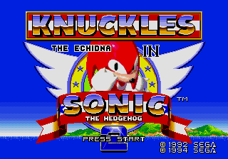

| |
|
| |
|
Contents: Introduction | *In Depth Information* | 1 | 2 | 3 | 4
 |
|
Introduction
The second game (if you call Sonic 1 & Knuckles a game) to be primarily compatible with Sonic and Knuckles happens to be one of the more popular Sonic MD games, Sonic 2.
This combines to make a game called 'Knuckles the Echidna in Sonic the hedgehog 2', where you play through all of the Sonic 2 levels as the Knuxster. Fun!
Well, as far as I know, the plot (should) be in the same form as the Sonic 2 plot, albeit playing as Knuckles instead of Sonic or Tails. So, not much info I can give you on this front. Go check Sonic the Hedgehog 2 info page for more info on the plot etc.
| |||
| Go Back To The Top Of The Page |

|
In Depth Information Well. Here we are with Sonic 2 & Knuckles, Sonic 2, only you play as Knuckles! Still with us? Cool ^_^. Graphically speaking, obviously if Knuckles from S&K was just plastered onto Sonic 2, then he'd look weird, so SEGA have done an alright job at recreating Knuckles so that he doesn't look out of place in this game. Only downside is, unfortunately, this is still Sonic 2, your just playing as a different character, so no points on the originality side there, but who cares if you've got S&K with Sonic 3, right? ;) | ||
| Go Back To The Top Of The Page |

|
Yes, again, Robotnik appears, but simply in the same guises as when you were playing this as Sonic in 1992. Not really something to cry about, but just something none the less. Anyway, you can still whup him since you know the bosses, so playing as Knuckles should be enjoyable and relaxing, and simply a doddle to play through, if you're a Sonic pro that is... :) Go on, kick Eggman's butt while no-one's looking. Come on, he's just asking for it! Take him up to Death Egg (yes, you go to Death Egg TOO) and whup his sorry bee-hind! Just be careful that Knux can't jump as high as Sonic when it comes to Eggman's final weapon...
| ||
| Go Back To The Top Of The Page |

|
AAAAAnd again, you still have to collect all of the Chaos Emeralds, via Sonic 2's oldie Special Stage. Anyone who doesn't know the routine, collect the rings when they appear, avoiding the bombs, which lose you rings. Collect the right amount of rings and you advance to the next bit of the stage. there are three bits. Complete them with the satisfactory amount of rings and you win a Chaos Emerald. Collect all seven to become SUPER KNUCKLES, which is actually worth collecting the Chaos Emeralds for, plus it hones your abilities on these special Stages, even though they're long gone... they'll still have a special place... in our hearts... OH GEOFFREY! Ahem. sorry. Got carried away. I'm not mad y'know. :P
| ||
| Go Back To The Top Of The Page |

|
One of the good things about Sonic 2 & Knuckles is that in certain places (only A FEW RARE spots mind, not that many) you can access certain power ups you could never get to as Sonic. See the screenshot next to this text? You can't get to that place as Sonic or
Tails. Bear in mind that these are select places that not even you, my fellow Sonicateerist, would think of searching in. I found this one though (hee hee I'm good! Oh, I'm not then.) located in the Chemical Plant Zone. Not gonna tell ya which Act. Not gonna tell ya where.
See if you can find it.
| ||